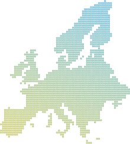

한국소재시험연구원는
중국위생허가(NMPA), CPNP 서비스를 제공합니다.

Cosmetic roduct Notification Portal
2013년 7월 11일 이후 유럽에 유통되는 모든 화장품에 대해 적용되는 온라인 등록 시스템으로 EU 당국은 화장품 원료 및 성분에 대한 관리 및 통제를 하고 있습니다.
E.U 27개국과 EFTA 4개국에 적용되며, RP는 완성된 제품 포뮬라와 라벨을 CPNP에 등록 후 관련 등록번호를 받아 유통을 시작하게 됩니다.
EFTA 4개국 중 스위스는 자가모니터링 제도로 인해 CPNP를 적용 받지 않습니다.
피부 톤(멜라닌 수치) 측정 / 제품 사용 전후
pH 측정 / 제품 사용 15분 후, 1시간
고해상도 제품 사용 전후 얼굴 전면 사진
얼굴 피지 측정 / 제품 사용 전후
피부 및 모발 광택 측정 (제품 사용 전후)
주름 길이 및 깊이 측정 / 제품 사용 전후